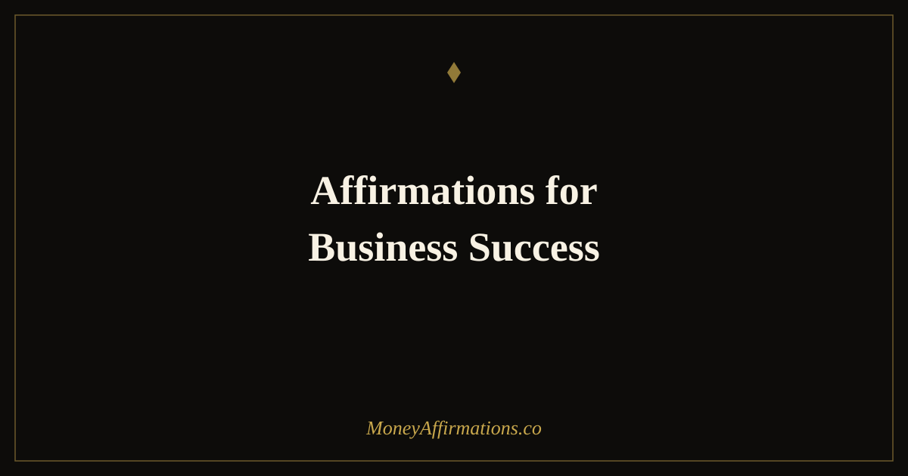

Affirmations for Business Success: 30 Statements to Grow Your Business

Running a business surfaces every limiting belief you have ever held about money. Pricing a service, sending a proposal, hiring your first team member, raising your rates — each of these moments is as much a psychological event as it is a business one. The business owner who charges what their work is truly worth is not necessarily more skilled than the one who undercharges; they simply carry a different set of beliefs about what they deserve and what is possible. Affirmations for business success work on those beliefs directly.
These 30 affirmations are built around the specific psychological patterns that most commonly block entrepreneurial growth: imposter syndrome, fear of visibility, ambivalence about earning significantly, reluctance to invest in growth, and the constant temptation to shrink rather than expand. Used alongside deliberate strategy and consistent action, they create the internal conditions in which a business can grow to match its full potential.
What are affirmations for business success?
Affirmations for business success are present-tense statements that align your entrepreneurial identity with the level of growth you are working toward. They differ from general positive thinking in that they target the specific beliefs that suppress business performance: the discomfort with charging premium prices, the reluctance to be seen and marketed, the fear that growth will bring more problems than it solves, and the deeply held ambivalence that many business owners feel about wanting to earn at a high level.
These affirmations are not a replacement for strategy, execution, or market understanding. They are a tool for ensuring that your psychology is working with your ambitions rather than against them. For entrepreneurs looking for a broader foundation, the affirmations for entrepreneurs collection addresses the full entrepreneurial mindset alongside the business-specific statements here.
30 affirmations for business success
- My business creates genuine value and I am generously compensated for every part of it.
- I charge what my work is worth and my ideal clients pay it without question.
- My business grows consistently because I show up with excellence and clear intention.
- I attract the clients, customers, and opportunities that are right for my business.
- I am a skilled, confident, and capable business owner who leads with clarity.
- Revenue flows into my business from multiple, growing, and reliable sources.
- I invest in my business because I know the return justifies every commitment.
- My business reputation grows stronger with every client I serve and every promise I keep.
- I market my business with confidence because I believe deeply in the value I offer.
- I am comfortable being visible, speaking about what I do, and asking for the sale.
- My business provides the income, freedom, and impact I set out to create.
- I release imposter syndrome and show up as the expert and leader I have become.
- Every business challenge teaches me something that makes me a stronger entrepreneur.
- I build the systems, team, and processes that allow my business to scale beyond me.
- My business serves its clients at the highest level and earns loyalty in return.
- I make business decisions from a place of clarity and confidence, not fear or scarcity.
- My income from this business grows every single month as my skills and reach expand.
- I pursue business growth with energy and focus, and I celebrate every milestone along the way.
- I raise my prices when my value demands it and I do so without apology or hesitation.
- The right collaborators, partners, and referrers find me because my work speaks for itself.
- I run a business that is financially healthy, professionally respected, and personally fulfilling.
- I am strategic about where I spend my time, energy, and resources in this business.
- My business is a genuine financial asset that grows in value with every year.
- I ask for referrals, testimonials, and repeat business because I know the value I deliver.
- Every sale I make is a transaction where both sides win — I never apologise for earning.
- I build my business with patience, persistence, and the absolute conviction that it will succeed.
- My business gives me the platform to do meaningful work while building serious wealth.
- I solve my clients' real problems brilliantly, and they reward me with loyalty and referrals.
- I am the CEO of my business in mindset, behaviour, and financial decision-making.
- Business success is available to me and I build it one excellent decision at a time.
How to use these affirmations
The most powerful application of business success affirmations is to pair them with the specific actions that feel most psychologically difficult in your business right now. If pricing is the block, use the affirmations about charging what your work is worth every morning and immediately before you write any proposal or quote. If visibility is the challenge, use the affirmations about marketing and being seen before every piece of content you create or publish.
For general daily practice, choose three affirmations each morning and connect each one to a specific business action for that day. The affirmation sets your identity for the day; the action creates evidence of that identity; the evidence makes the affirmation more believable the next morning. This loop — affirmation, action, evidence — is what builds genuine entrepreneurial confidence over time, rather than a fragile positivity that collapses under business pressure. Run this loop consistently for four weeks and you will notice a measurable shift in how you make decisions and how you present yourself commercially.
The psychology of business self-efficacy and financial outcomes
Entrepreneurial self-efficacy — the belief that you are capable of successfully running and growing a business — predicts business outcomes more reliably than almost any external factor. Studies across small business owners, freelancers, and entrepreneurs consistently show that those with high business self-efficacy charge more, market more actively, invest more in growth, and persist through setbacks that cause lower-efficacy owners to give up or shrink back.
The financial consequences are substantial. Business owners with high self-efficacy consistently out-earn those with comparable skills but lower confidence — because they ask for more, offer more, and back themselves in situations where ambivalence would otherwise lead to retreat. The beliefs driving this behaviour are not fixed. They are shaped by how you talk to yourself about your business, your value, and your potential. Affirmations for business success work on exactly this — systematically replacing the self-limiting narrative with one that is aligned with the business results you are capable of creating. Over months and years, the compounding effect of that shift produces outcomes that look, from the outside, like exceptional talent or extraordinary luck.
Tips to make them work faster
- Target the exact belief holding your business back. If undercharging is the pattern, focus heavily on the pricing affirmations. If it is fear of visibility, focus on the marketing ones. Precision in belief work produces faster results than general practice.
- Say them aloud before high-stakes business interactions. Proposal submissions, sales calls, pricing conversations — three affirmations spoken aloud in the two minutes before change the state you bring to the room.
- Write your business wins weekly. One thing your business did well this week, written down. Confidence is built on evidence — collect the evidence deliberately.
- Raise your prices once in the next 30 days. Nothing builds business confidence faster than testing a higher price and having it accepted. Use the affirmations to prepare for the discomfort; then act.
- Connect with one other business owner monthly. Affirmations build internal belief; community accelerates it. Find people who see your business potential at full size.
Frequently Asked Questions
How do affirmations for business success differ from general confidence affirmations?
Business success affirmations are targeted at the specific psychological patterns that block entrepreneurial growth: fear of charging what your work is worth, reluctance to market yourself, imposter syndrome when entering new markets, and the deep ambivalence that many business owners feel around wanting to earn significantly more. General confidence affirmations address self-belief broadly. Business affirmations address the precise beliefs that show up when pricing a proposal, pitching a client, or deciding whether to invest in growth.
Should I use business success affirmations even if my business is already growing?
Yes — and especially so. Each level of business growth brings a new set of psychological challenges. Moving from freelancer to agency owner, from small clients to large contracts, from local to national — each transition requires an expansion of identity. Affirmations help you stay ahead of the limiting beliefs that tend to surface at each new level, creating the internal readiness that allows external growth to accelerate rather than stall.
How long before business affirmations start to produce results?
The psychological shift begins immediately — the first time you say an affirmation with real intention, you are interrupting an old pattern and introducing a new one. Behavioural changes, which drive business results, typically emerge within two to four weeks of consistent daily practice. The mechanism is not magic: changed beliefs lead to changed behaviours (pricing higher, marketing more consistently, asking for referrals, investing in growth), and changed behaviours lead to changed results. Consistency is the key variable.
Your business is one of your most powerful vehicles for financial independence and meaningful work. Explore the full money affirmations collection for a comprehensive set of statements that support both your business and your broader financial life.